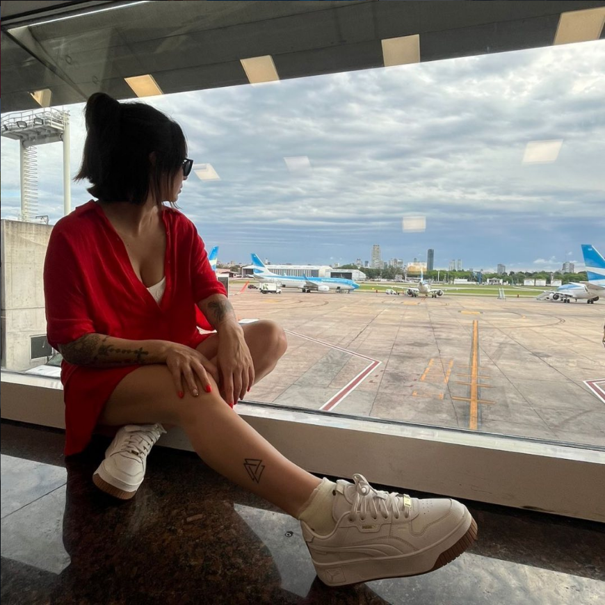

Estética y peluquería orgánica
Sentido Organico
Elegí priorizar tu salud capilar.
Elegí priorizar tu salud capilar.
Una experiencia personalizada, tranquila y cuidada, Unica para vos.

Coloración con productos naturales y orgánicos, sin amoníaco ni químicos agresivos. Coloración con productos naturales y orgánicos, sin amoníaco ni químicos agresivos.
Conoce quien esta detrás de Sentido Orgánico

En Sentido Orgánico, apostamos por una experiencia personalizada, tranquila y cuidada. Ofrenciendo servicios de alta calidad con productos naturales y orgánicos, eligiendo priorizar tu salud capilar.
En Sentido Orgánico, apostamos por una experiencia personalizada, tranquila y cuidada. Ofrenciendo servicios de alta calidad con productos naturales y orgánicos, eligiendo priorizar tu salud capilar.
Guemes Norte 1774, Tandil, Argentina
Reserva tu turno en 3 simples pasos